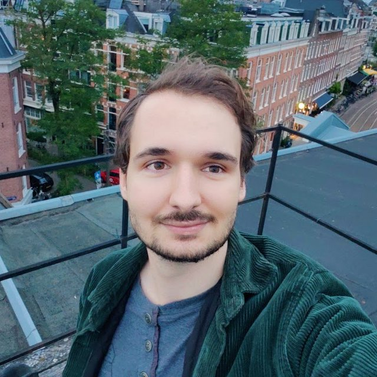

Tristan Metz
トリスタン・メッツ
ゲームプレイ＆ツールプログラマー
キャラクターコントローラー、ゲームプレイシステム、エディターツールを開発しています。東京の株式会社XR Japanでリードプログラマーを務めています。
履歴書（PDF） ポートフォリオ
概要
ゲーム開発歴10年。ゲームプレイシステムとツールを専門とするゲームプログラマーです。最近はC#とUnityで開発しており、それ以前は2つの自作C++エンジンで物理、シリアライズ、エディターを書きました。
職歴
リードプログラマー
2025年3月 — 現在
株式会社XR Japan（旧AVR Japan）・東京
- 医師が自社開発の内視鏡コントローラーとフットペダルで内視鏡的粘膜下層剥離術（ESD）を練習できるバーチャルトレーニング「Lumen」と、クライアント向けVR・iPadOS研修アプリのリードプログラマー
- Burstでコンパイルしたソルバーによる組織の挙動、病変のマーキング、コントローラーとペダルの入力を内視鏡先端の動き（押し引き・回転・角度）に変換する処理
- シミュレーションのパフォーマンス計測とフレーム時間の改善、メッシュデータの読み込みの高速化
- 設計方針とコーディング規約の策定、コードレビュー、プログラマーの育成とオンボーディング。医師・パートナー・クライアントとの技術的な打ち合わせ（見積もりとリスク管理を含む）
- 全プロジェクトで使われる共通Unityパッケージ（イベントと状態管理のRipple、VRテンプレート、UnityUtilities、AutoAssign）と、手作業で繰り返していた確認を置き換えるテスト環境を整備
ゲームプログラマー
2024年9月 — 2025年2月
株式会社AVR Japan・東京
- UnityでVR・タブレット向け研修アプリのゲームプレイ、UI、ツールを開発（Unreal Engineでの開発も一部担当）
- 新しいクライアントアプリの出発点となるVRテンプレートパッケージを作成。インタラクション、フェード、トゥイーン、条件付きイベントのコンポーネントで、プロジェクト間でコピーしていたコードを置き換えました
共同創業者・プログラマー
2022年1月 — 現在
Idomi Games（インディースタジオ、本業と並行）
- Global Game Jam 2022の作品から始まった、精密な操作が求められる2Dアクション「Ryze」（Steamでプレイテスト公開中、5人チーム）のプログラマー
- 「パールを投げてワープする」移動のキャラクターコントローラー。小さなステートマシンで、着地直前の投げ入力を先行入力として受け付け、足場から歩いて落ちると落下ではなくパールに変身させ、両足のプローブで崖際を検知してアニメーションを反応させます
- 崩れる足場から、オブジェクトごとのタイムライン（Chronos）で物理とアニメーションの速さをまとめて変えるタイムバブルまで、自分が作ったギミックをすべて並べたテストレベル。コントローラーの変更を約1分で全ギミックと照合できます
- 以前のプロジェクトから再利用した会話システム。各セリフをイベントとして送り、UIには依存しません。会話の開始は進行条件を受け取るawait可能な呼び出し一つで、トリガー範囲、歩いて近づくカットシーン、失敗が続いたときのセリフはどれも小さなコンポーネントで実装しています
- スタジオのゲームジャム作品のプログラミングをすべて担当。Shroomer（GMTK Game Jam 2026、4日間）、This Side Up（Mini Jam 188、72時間）など
ゲームプレイプログラマー（卒業インターンシップ）
2021年9月 — 2022年4月
VR Amsterdam・オランダ アムステルダム
- 複数人が一つの実空間を共有するマルチプレイVRアーケードゲーム「Ghostebash」を、空のプロジェクトから一人でプログラミング
- クライアント・ホスト型のMirrorによるローカルマルチプレイ、プレイヤーの実際の体をゲーム内に再現するIKリグ、XR Interaction Toolkitによる物理ベースのつかみ操作とインタラクション
- フリーロームVRに関する卒業研究。ネットワーク処理の1フレームあたりの負荷はクライアント0人で0.08ms、4人で0.40ms、10人で1.33msと計測し、クライアント・ホスト型で十分であることを確認しました
プログラマー（インターン）
2019年2月 — 2019年7月
Damocles Games・オランダ
- 10人のチームでUnityの3Dグリッド型ターン制ストラテジー（ファイアーエムブレム風）を開発
- ビジュアルスクリプティング用のAPIとカスタムノードを作成し、デザイナーがプログラマーなしでゲームプレイの挙動を作れるようにしました
- 要望のあったホバー時のハイライトに対応できなかったユニットの選択・ハイライトの仕組みを作り直し、その上にホバー表示とターン制のカメラ操作を実装しました
エンジン・ツールの作品
Tristeon
VulkanレンダラーのC++エンジン · 2人・5か月 · 2017年 · GitHubスター70以上
ImGuiによるエディターと、それを支えるリフレクションを担当。C++にはリフレクションがないため、各型がmainの前にファクトリーを登録します。シーンには型名を保存し、同じ情報で専用UIなしにあらゆるコンポーネントを編集できるインスペクターを動かしています。
Orb
初の自作C++エンジン（OpenGL）で動くパズルゲーム · 2017年
物理エンジンを担当。抵抗・摩擦・反発をもつリジッドボディ、速い物体の壁のすり抜けを防ぐ連続衝突判定付きのAABB衝突、トリガー、レイキャスト。Unityをレベルエディターにし、エクスポートしたデータをエンジンがオブジェクト単位で復元します。
osu!catch レベルエディター
Unity · 個人開発 · 2018年 — 2019年
ビートグリッドを1枚のフラグメントシェーダーでピクセル単位に描画し、数千本の線オブジェクトでは遅くなるところを、どのテンポやズームでも正確に表示。自分自身を元に戻すメメントによるUndo/Redo。機能はマッパーのフィードバックをもとに追加しました。
C# vs. Wren
C++エンジン向けスクリプト言語のベンチマーク · 2023年
採用前に両方を計測。C#は6〜15倍速く動作し、Wrenはコンパイルが1000倍以上速く、C++の呼び出しは1ms未満（C#は117ms）でした。